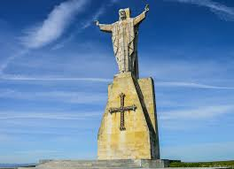

Medio Transporte : A pie
Fecha de inicio de la ruta : 2020-10-19
Fecha de fin de la ruta : 2020-10-19
Duracion de la ruta : PT7H
Agencia : Anturis
Descripcion de la ruta : Ruta por el centro de oviedo y subida al naranco
Personas adecuadas :
Apta para niños
Lugar de inicio : Oviedocalle Uria
Coordenadas : 43.364265 , -5.851607, relativeToGround
Referencias :
https://es.wikipedia.org/wiki/OviedoRecomendacion : 6
Descripcion del hito : Principal zona verde en el centro de oviedo
Coordenadas : 43.364265 , -5.851607, 0
Distancia al hito anterior : 0
Descripcion del hito : Iglesia importante en oviedo
Coordenadas : 43.379091 , -5.865695, 200
Distancia al hito anterior : 1100
Descripcion del hito : Monumento en lo alto del naranco
Coordenadas : 43.384894 , -5.864109, 150
Distancia al hito anterior : 1100
Medio Transporte : A pie
Fecha de inicio de la ruta : 2020-10-19
Fecha de fin de la ruta : 2020-10-19
Duracion de la ruta : PT3H
Agencia : Antera
Descripcion de la ruta : Ruta a la vera del mar conociendo la zona de la providencia de Gijon
Personas adecuadas :
Apta para niños
Apta para ancianos
Lugar de inicio : Hotel Abba GijonPaseo Dr. Fleming, 37
Coordenadas : 43.548202 , -5.640939, relativeToGround
Referencias :
https://es.wikipedia.org/wiki/La_madre_del_emigranteRecomendacion : 5
Descripcion del hito : monumento a la madre del emigrante
Coordenadas : 43.548202 , -5.640939, 0
Distancia al hito anterior : 0
Descripcion del hito : ermita de la virgen de la providecia situada engijon en el alto de la providencia
Coordenadas : 43.551090 , -5.615722, 340
Distancia al hito anterior : 1100
Descripcion del hito : Es un Mirador a reseñar en Gijon tanto por sus vistas, como por el paseo que lleva hasta el. El Ayuntamiento de Gijón ha hecho un camino asfaltado de 5km que lleva por toda la costa. Merece la pena reseñarlo como atracción importante de Gijón
Coordenadas : 43.554124 , -5.618682, 0
Distancia al hito anterior : 1100
Medio Transporte : A pie
Fecha de inicio de la ruta : 2020-10-19
Fecha de fin de la ruta : 2020-10-19
Duracion de la ruta : PT4H
Agencia : Tinel
Descripcion de la ruta : Ruta por el centro de gijon hasta el elogio del horizonte
Personas adecuadas :
Apta todos los publicos
Lugar de inicio : Museo del ferrocarrilCalle rodriguez san pedro, gijon
Coordenadas : 43.541254 , -5.672285, relativeToGround
Referencias :
https://es.wikipedia.org/wiki/Elogio_del_HorizonteRecomendacion : 8
Descripcion del hito : museo del ferrocarril
Coordenadas : 43.541254 , -5.672285, 0
Distancia al hito anterior : 100
Descripcion del hito : Ayuntamiento de la ciudad
Coordenadas : 43.545138 , -5.662619, 90
Distancia al hito anterior : 800
Descripcion del hito : munumento situado en cimadevilla
Coordenadas : 43.549049 , -5.662961, 240
Distancia al hito anterior : 300
Medio Transporte : A pie
Fecha de inicio de la ruta : 2020-10-19
Fecha de fin de la ruta : 2020-10-19
Duracion de la ruta : PT2H
Agencia : Tinel
Descripcion de la ruta : Ruta por el centro de oviedo
Personas adecuadas :
Apta todos los publicos
Lugar de inicio : Mercado el fontanCalle fontan, oviedo
Coordenadas : 43.359934 , -5.845694, relativeToGround
Referencias :
https://es.wikipedia.org/wiki/Casa_consistorial_de_OviedoRecomendacion : 6
Descripcion del hito : Ayuntamiento de la ciudad
Coordenadas : 43.360439 , -5.844409, 240
Distancia al hito anterior : 1100
Descripcion del hito : Catedral de la ciudad
Coordenadas : 43.362588 , -5.843547, 0
Distancia al hito anterior : 1100
Descripcion del hito : museo de arqueologia de asturias
Coordenadas : 43.362690 , -5.842302, 100
Distancia al hito anterior : 1100
Medio Transporte : A pie
Fecha de inicio de la ruta : 2020-10-19
Fecha de fin de la ruta : 2020-10-19
Duracion de la ruta : PT3H
Agencia : Tares
Descripcion de la ruta : por el centro de aviles
Personas adecuadas :
Apta todos los publicos
Lugar de inicio : Ayuntamiento de AvilesPlaza España, Aviles
Coordenadas : 43.555633 , -5.922345, relativeToGround
Referencias :
https://es.wikipedia.org/wiki/Centro_Cultural_Internacional_Oscar_NiemeyerRecomendacion : 5
Descripcion del hito : Ayuntamiento de la ciudad
Coordenadas : 43.555633 , -5.922345, 100
Distancia al hito anterior : 1100
Descripcion del hito : Museo de historia urbana de aviles
Coordenadas : 43.557240 , -5.921361, 250
Distancia al hito anterior : 1100
Descripcion del hito : Moderno espacio de arte y cultura
Coordenadas : 43.557534 , -5.917394, 150
Distancia al hito anterior : 1100